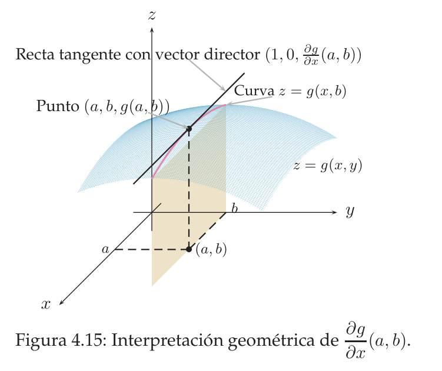
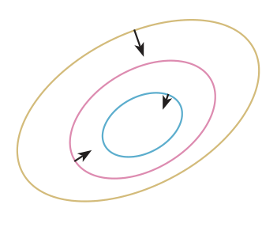
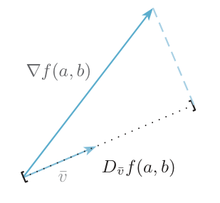

Derivadas parciales, gradiente, derivadas de orden superior y direccional
Cómo medir el cambio de una función de varias variables: derivar «una variable cada vez», reunir esas derivadas en el vector gradiente, derivar otra vez (matriz Hessiana) y calcular la pendiente en cualquier dirección y la dirección de máximo crecimiento.
0Antes de empezar U pp.168-179
Estás de pie en una ladera. Si das un paso hacia el este, subes o bajas una cierta cantidad; si das uno hacia el norte, otra. Esas dos «pendientes» son las derivadas parciales; la pareja ordenada de ambas es el gradiente, que apunta cuesta arriba. Derivar otra vez da la Hessiana (cómo cambian las pendientes). Y si en lugar de este o norte caminas en una dirección cualquiera, la pendiente es la derivada direccional, que se calcula con un producto escalar. Nada nuevo en el cálculo: casi todo se reduce a derivar como en una variable, tratando las demás variables como constantes.
U pp.168,179Qué necesitas saber ya
- Derivación de una variable (Tema 2): reglas de la suma, del producto, del cociente y de la cadena, y la tabla de derivadas. Es la herramienta de todo este tema.
- Vectores en $\mathbb R^n$ (tema 4.1): producto escalar, norma, vector unitario, ángulo $\cos\alpha=\frac{u\cdot w}{\|u\|\|w\|}$, perpendicularidad ($u\cdot w=0$).
- Límites y continuidad en dos variables (tema 4.2): caminos y polares; hacen falta en las funciones «a trozos» (E 4.33, 4.34, 4.38).
- Curvas de nivel (tema 4.2): se usan para entender la Propiedad 4.1.
Mapa del tema
| Apartado | Qué contiene | Dónde está |
|---|---|---|
| 1 Derivada parcial | Def. 4.8-4.9, cómo se calcula, interpretación geométrica, puntos especiales | U §4.3.2, pp.168-173 |
| 2 Gradiente | definición, Propiedad 4.1 (perpendicular a las curvas de nivel) | U §4.3.3, pp.173-174 |
| 3 Orden superior | parciales segundas, Hessiana, teorema de Schwarz | U §4.4, pp.175-178 |
| 4 Derivada direccional | Def. 4.10, $D_vf=\nabla f\cdot v$, máximo crecimiento | U §4.5, pp.179-182 |
| 5 Ejercicios de E | 4.25-4.44 (20 ejercicios) | E pp.153-165 |
| 6 Ejemplos propios | 4 ejemplos | propio |
| 7 Examen | 9 problemas de X | X |
| 8 Chuleta y comprobación | fórmulas, errores, lista | síntesis |
Qué se pide en los ejercicios y en el examen
(A) Gradiente en un punto (la pregunta más repetida: E 4.28, 4.29, 4.31; X 2017-2019). (B) Hessiana en un punto, casi siempre de tres sumandos «fáciles» (E 4.36-4.37; X 2018). (C) Parciales en un punto especial de una función «a trozos», con la definición (E 4.33, 4.38). (D) Derivada direccional y dirección de máximo crecimiento (E 4.40-4.44; X electrónica). (E) Puntos críticos: resolver $\nabla f=0$ (E 4.32; X 2019). Los planos tangentes y la clasificación de extremos llegan en el Tema 5, pero necesitan el gradiente y la Hessiana de aquí.
1Derivada parcial U pp.168-173
Una función $g(x,y)$ es una ladera con dos direcciones de movimiento. Si congelas $y=b$ y solo dejas que cambie $x$, recorres un «corte» de la ladera: una curva que ya es la gráfica de una función de una variable, $h(x)=g(x,b)$. La pendiente de ese corte en $x=a$ es la derivada parcial respecto de $x$. Lo mismo con $y$ y $x=a$ fijo. Por eso la derivada parcial «no es más que la derivada que ya conoces» (U p.169): el truco es solo decidir qué variable se mueve y cuál se trata como un número.
U p.169Sea $g:D\subset\mathbb R^2\to\mathbb R$, $D$ abierto, y $(a,b)\in D$. La derivada parcial de $g$ respecto de $x$ en $(a,b)$ es $$\frac{\partial g}{\partial x}(a,b)=\lim_{h\to0}\frac{g(a+h,b)-g(a,b)}{h}$$ y la derivada parcial respecto de $y$ es $$\frac{\partial g}{\partial y}(a,b)=\lim_{h\to0}\frac{g(a,b+h)-g(a,b)}{h},$$ siempre que el límite exista. Notaciones: $\frac{\partial f}{\partial x}=f_x=D_1f$ y $\frac{\partial f}{\partial y}=f_y=D_2f$. Si existe en cada punto de un conjunto $A$, se habla de la función derivada parcial en $A$. Para $n$ variables, $\frac{\partial f}{\partial x_k}(a_1,\dots,a_n)$ es la derivada de $x_k\mapsto f(a_1,\dots,x_k,\dots,a_n)$ en $x_k=a_k$.
U pp.169-173$\dfrac{\partial g}{\partial x}(1,2)=\lim_{h\to0}\dfrac{(1+h)\cdot2-1\cdot2}{h}=\lim_{h\to0}\dfrac{2h}{h}=2$ y $\dfrac{\partial g}{\partial y}(1,2)=\lim_{h\to0}\dfrac{1\cdot(2+h)-2}{h}=1$.
U p.170Interpretación geométrica
$(1,0,\frac{\partial g}{\partial x}(a,b))$ es un vector director de la recta tangente a la curva $z=g(x,b)$ (corte de la gráfica con el plano $y=b$); y $(0,1,\frac{\partial g}{\partial y}(a,b))$ lo es de la tangente a $z=g(a,y)$ (corte con el plano $x=a$). Es la versión en $\mathbb R^3$ de «$(1,f'(a))$ es director de la tangente a $y=f(x)$».

Cómo se calculan en la práctica U p.171
- Elige la variable respecto de la que derivas (por ejemplo $x$).
- Trata las demás como constantes numéricas: si multiplican, salen fuera; si están solas sumadas, su derivada es $0$.
- Aplica las reglas de una variable (suma, producto, cociente, cadena).
- Sustituye el punto al final.
- $f=x+3yx$: $\frac{\partial f}{\partial x}=1+3y$, $\frac{\partial f}{\partial y}=3x$.
- $g=xe^{x+y}$: $\frac{\partial g}{\partial x}=e^{x+y}+xe^{x+y}$ (producto), $\frac{\partial g}{\partial y}=xe^{x+y}$ ($x$ es constante).
- $h=\operatorname{sen}(xy^2)$: $\frac{\partial h}{\partial x}=\cos(xy^2)\,y^2$, $\frac{\partial h}{\partial y}=\cos(xy^2)\,2xy$ (cadena: derivada interior respecto de la variable que se mueve).
$f(x,y,z)=xyz^2$: $\frac{\partial f}{\partial x}=yz^2$, $\frac{\partial f}{\partial y}=xz^2$, $\frac{\partial f}{\partial z}=2xyz$. Cada vez se mueve una sola variable.
U p.173Puntos especiales: la definición manda U p.172
Las reglas de derivación solo valen donde la fórmula «vive» alrededor del punto. Si una función se define a trozos (una fórmula fuera del origen y un valor suelto, $f(0,0)=0$, en él), la fórmula de la derivada no se puede evaluar en el origen (da $\frac00$) y hay que volver al límite de la definición, mirando solo lo que hace $f$ sobre los ejes: $f(h,0)$ para $\partial_x$ y $f(0,h)$ para $\partial_y$.
En una variable, derivable implica continua. En varias variables no: $f(x,y)=\operatorname{arctg}\frac{xy}{x^2+y^2}$ con $f(0,0)=0$ no es continua en $(0,0)$ (por $y=mx$ el límite es $\operatorname{arctg}\frac m{1+m^2}$, que depende de $m$) y, sin embargo, tiene las dos derivadas parciales en $(0,0)$, ambas $0$, porque sobre los ejes $f$ vale $0$. Las parciales solo ven dos caminos (los ejes); la continuidad pide todos.
U p.172(i) Derivar respecto de $x$ y olvidar que la regla de la cadena aporta la derivada interior respecto de $x$ (en $e^{x-y}$, la de $y$ lleva un signo menos). (ii) Sustituir el punto antes de derivar. (iii) En un punto especial, evaluar la fórmula de la derivada o decir «no existe» porque sale $\frac00$: hay que usar la definición.
2Gradiente U pp.173-174
Las derivadas parciales son una lista de números: «pendiente hacia el este», «pendiente hacia el norte». Empaquetadas en un único vector, se llaman gradiente. Más adelante (apartado 4) veremos que ese vector apunta exactamente en la dirección en que la ladera sube más rápido, y que su longitud es esa pendiente máxima. Por eso es la brújula de la montaña.
Si $f$ tiene derivadas parciales respecto de sus dos variables en $(a,b)$, el vector $$\nabla f(a,b)=\Big(\frac{\partial f}{\partial x}(a,b),\ \frac{\partial f}{\partial y}(a,b)\Big)$$ es el gradiente de $f$ en $(a,b)$. Para $n$ variables, $\nabla f(a_1,\dots,a_n)=\Big(\frac{\partial f}{\partial x_1},\dots,\frac{\partial f}{\partial x_n}\Big)(a_1,\dots,a_n)$, un vector de $\mathbb R^n$ (uno por variable, en el orden de las variables).
U pp.173-174$f(x,y)=e^{x+y}+\operatorname{arctg}(x^2+1)$: $\frac{\partial f}{\partial x}=e^{x+y}+\frac{2x}{(x^2+1)^2+1}$ y $\frac{\partial f}{\partial y}=e^{x+y}$. Entonces $\nabla f(0,0)=(1+0,\ 1)=(1,1)$.
U p.174El vector gradiente en un punto $(a,b)$ es perpendicular a la curva de nivel que pasa por ese punto.
Idea: a lo largo de una curva de nivel $f$ no cambia (misma altura), así que moverse por ella no sube ni baja; el gradiente apunta hacia donde sí sube, que es la dirección perpendicular. Como en un mapa topográfico: la máxima pendiente cruza las líneas de nivel en ángulo recto.
U p.174
El gradiente es un vector (con tantas componentes como variables), no un número; y no es la suma de las parciales. Además, «$\nabla f(a,b)$» solo tiene sentido si existen las dos parciales en $(a,b)$.
3Derivadas de orden superior y Hessiana U pp.175-178
$\frac{\partial f}{\partial x}$ es, a su vez, una función de $(x,y)$: se puede volver a derivar, respecto de $x$ o de $y$. Con dos variables salen $2\times2=4$ derivadas segundas (con tres, $9$). Dicen cómo cambian las pendientes: si la ladera se curva hacia arriba o hacia abajo. Se ordenan en una tabla, la matriz Hessiana, que en el Tema 5 decidirá si un punto crítico es mínimo, máximo o silla.
$$\frac{\partial^2f}{\partial x^2}=\frac{\partial}{\partial x}\Big(\frac{\partial f}{\partial x}\Big),\qquad \frac{\partial^2f}{\partial y\,\partial x}=\frac{\partial}{\partial y}\Big(\frac{\partial f}{\partial x}\Big),\qquad \frac{\partial^2f}{\partial x\,\partial y}=\frac{\partial}{\partial x}\Big(\frac{\partial f}{\partial y}\Big),\qquad \frac{\partial^2f}{\partial y^2}=\frac{\partial}{\partial y}\Big(\frac{\partial f}{\partial y}\Big).$$ Se lee de derecha a izquierda: en $\frac{\partial^2f}{\partial y\,\partial x}$ se deriva primero respecto de $x$ y luego respecto de $y$. Notaciones: $\frac{\partial^2f}{\partial x^2}=f_{xx}=D_{11}f$ y $\frac{\partial^2f}{\partial y\,\partial x}=f_{xy}=D_{12}f$ (primero respecto de $x$, luego de $y$), etc. Se puede seguir derivando: $\frac{\partial^3f}{\partial x^3}$, … (derivadas de orden superior), siempre que existan. (no hay criterio único para el orden de los subíndices: fíjate en la definición que dé el enunciado). La matriz Hessiana de $f$ en $(a,b)$ es $$Hf(a,b)=\begin{pmatrix}\dfrac{\partial^2f}{\partial x^2}(a,b)&\dfrac{\partial^2f}{\partial x\partial y}(a,b)\\[8pt]\dfrac{\partial^2f}{\partial y\partial x}(a,b)&\dfrac{\partial^2f}{\partial y^2}(a,b)\end{pmatrix}$$ y, en $n$ variables, la tabla $n\times n$ de todas las parciales segundas.
U pp.175-177- Primeras: $\frac{\partial f}{\partial x}=\frac{2x}{x^2+e^y}$, $\frac{\partial f}{\partial y}=\frac{e^y}{x^2+e^y}$.
- Segundas: $\frac{\partial^2f}{\partial x^2}=\frac{2e^y-2x^2}{(x^2+e^y)^2}$; $\frac{\partial^2f}{\partial x\partial y}=\frac{\partial^2f}{\partial y\partial x}=\frac{-2xe^y}{(x^2+e^y)^2}$; $\frac{\partial^2f}{\partial y^2}=\frac{x^2e^y}{(x^2+e^y)^2}$.
- En $(1,0)$: $Hf(1,0)=\begin{pmatrix}0&-\tfrac12\\-\tfrac12&\tfrac14\end{pmatrix}$.
Sea $f$ con derivadas parciales continuas en un abierto $D$. Si existe $\frac{\partial^2f}{\partial x\partial y}$ en todos los puntos de $D$ y es continua en $(a,b)\in D$, entonces existe $\frac{\partial^2f}{\partial y\partial x}(a,b)$ y $$\frac{\partial^2f}{\partial y\,\partial x}(a,b)=\frac{\partial^2f}{\partial x\,\partial y}(a,b).$$ En la práctica: para polinomios, exponenciales, senos, logaritmos (donde estén definidos) las cruzadas son continuas, así que la Hessiana es simétrica y basta calcular una cruzada (y usar la otra como comprobación). Solo en funciones a trozos, en el punto donde cambia la fórmula, hay que desconfiar (E 4.38-4.39).
U p.178Si $f$ tiene derivadas primeras continuas y $\frac{\partial^2f}{\partial y\partial x}=\operatorname{sen}(xy)$ (continua), por Schwarz (con los papeles de $x$ e $y$ intercambiados) $\frac{\partial^2f}{\partial x\partial y}(0,1)=\operatorname{sen}(0\cdot1)=0$.
U p.178(i) Leer Schwarz como «las cruzadas siempre coinciden»: tiene hipótesis (E 4.39). (ii) Sustituir el punto antes de la segunda derivada. (iii) Hacer una Hessiana $2\times2$ para una función de tres variables aunque una de ellas «no aparezca». (iv) Confundir el orden: $\frac{\partial^2f}{\partial y\partial x}$ deriva primero respecto de $x$.
4Derivada direccional y dirección de máximo crecimiento U pp.179-182
Las parciales miden la pendiente según los ejes. Para caminar hacia el noreste, hacia $(3,4)$ o en cualquier otro sentido, hace falta la derivada direccional: la pendiente de la ladera en esa dirección. Se mide con el mismo límite de siempre (cociente de incrementos), solo que el paso $h$ se da a lo largo del vector de dirección unitario $v$ (longitud 1, para que $h$ sea la distancia recorrida). Las parciales son el caso particular $v=(1,0)$ y $v=(0,1)$.
Para $f:D\subset\mathbb R^2\to\mathbb R$, $(a,b)\in D$ y $v=(v_1,v_2)$ unitario: $$D_vf(a,b)=\lim_{h\to0}\frac{f(a+hv_1,\,b+hv_2)-f(a,b)}{h},$$ si el límite existe. Con $e_1=(1,0)$: $D_{e_1}f=\frac{\partial f}{\partial x}$; con $e_2=(0,1)$: $D_{e_2}f=\frac{\partial f}{\partial y}$. En $\mathbb R^n$, igual: $D_vf(p)=\lim_{h\to0}\frac{f(p+hv)-f(p)}h$ con $p=(a_1,\dots,a_n)$. Interpretación: la recta tangente a la curva en que la gráfica corta al plano vertical de dirección $v$ por $(a,b)$ tiene vector director $(v_1,v_2,D_vf(a,b))$.
U pp.179-180Si $f$ admite derivadas parciales cerca de $(a,b)$ y estas son continuas en $(a,b)$, entonces para todo vector unitario $v$ $$D_vf(a,b)=\nabla f(a,b)\cdot v.$$ (Igual en $n$ variables.) Es decir: la derivada direccional es el producto escalar del gradiente por la dirección, o sea, la longitud de la proyección del gradiente sobre $v$ (con signo: negativa si forman un ángulo obtuso). La existencia de parciales continuas basta, pero no es necesaria, para que existan las direccionales.
U pp.180-181
$f(x,y)=x^2y+y^3$, $v=\big(\frac1{\sqrt2},\frac1{\sqrt2}\big)$, en $(1,0)$. $\nabla f=(2xy,\ x^2+3y^2)$, así que $\nabla f(1,0)=(0,1)$ y $D_vf(1,0)=(0,1)\cdot\big(\frac1{\sqrt2},\frac1{\sqrt2}\big)=\frac1{\sqrt2}$.
U pp.180-181- Normaliza el vector dado: $v=w/\|w\|$.
- Comprueba que las parciales son continuas (polinomios, exponenciales, etc.: sí).
- Calcula $\nabla f$ en el punto.
- $D_vf=\nabla f\cdot v$. Si piden «utilizando la definición» (E 4.41), o la función es rara en el punto, usa el límite de la Def. 4.10.
Dirección de máxima variación U pp.181-182
Como $D_vf=\nabla f\cdot v=\|\nabla f\|\,\|v\|\cos\alpha=\|\nabla f\|\cos\alpha$ (con $\alpha$ el ángulo entre $\nabla f$ y $v$ y $\|v\|=1$), el valor es máximo cuando $\cos\alpha=1$: $v$ apunta como el gradiente, y entonces vale $\|\nabla f\|$. Es mínimo, $-\|\nabla f\|$, cuando apunta al revés ($\cos\alpha=-1$), y vale $0$ cuando $v$ es perpendicular al gradiente (justo caminar a lo largo de la curva de nivel, Propiedad 4.1).
PSea $f$ con parciales cerca de $(a,b)$, continuas en $(a,b)$.
- Si $\nabla f(a,b)\ne0$: la derivada direccional máxima se obtiene en la dirección $\dfrac{\nabla f(a,b)}{\|\nabla f(a,b)\|}$ y vale $\|\nabla f(a,b)\|$; la mínima, en la dirección $-\dfrac{\nabla f(a,b)}{\|\nabla f(a,b)\|}$, y vale $-\|\nabla f(a,b)\|$.
- Si $\nabla f(a,b)=0$: todas las derivadas direccionales son $0$.
Resumen: $f$ crece lo más deprisa posible en el sentido del gradiente y decrece lo más deprisa posible en el opuesto.
U p.182$f=x^2-y^2+z$ en $(1,1,1)$: $\nabla f=(2x,-2y,1)=(2,-2,1)$, $\|\nabla f\|=3$. Máximo: dirección $\big(\frac23,-\frac23,\frac13\big)$, valor $3$. Mínimo: dirección $\big(-\frac23,\frac23,-\frac13\big)$, valor $-3$.
U pp.182-183(i) Usar el vector sin normalizar: $D_vf=\nabla f\cdot w$ solo vale si $\|w\|=1$. (ii) Dar «la dirección de máximo crecimiento» como $\nabla f$ sin dividir por su norma (la dirección se pide unitaria). (iii) Aplicar $D_vf=\nabla f\cdot v$ sin comprobar la continuidad de las parciales (ver Propio 3 y 4: puede dar un valor falso o no existir la direccional).
5Ejercicios del libro, resueltos E pp.153-165
Están en el orden del libro. Orden recomendado para aprender: 4.26 → 4.25 → 4.31 → 4.28 → 4.29 → 4.32 → 4.30 (parciales y gradiente) → 4.33 → 4.34 (puntos especiales) → 4.37 → 4.36 → 4.35 → 4.38 → 4.39 (orden superior) → 4.41 → 4.40 → 4.42 → 4.43 → 4.44 (direccional). El 4.27 usa integrales y es del Tema 6: déjalo para cuando lo hayas estudiado.
Ejercicio 4.25 · signo de las parciales del precio de un coche E p.153
El precio $f$ de un coche depende, entre otros factores, de la potencia del motor $p$ y de $c$, el consumo medio cada 100 km. ¿Qué signo podemos esperar que tengan $\frac{\partial f}{\partial p}$ y $\frac{\partial f}{\partial c}$?
- Qué me piden
- El signo de $\frac{\partial f}{\partial p}$ y de $\frac{\partial f}{\partial c}$ en un contexto real.
- Cómo lo pienso
- Una parcial mide cómo cambia $f$ moviendo una sola variable con las demás quietas; su signo dice si $f$ sube o baja. Es una pregunta de sentido común, sin cálculos.
- Qué uso
- Parcial como derivada con las demás variables fijas (U pp.169-170); derivada positiva $\leftrightarrow$ función creciente (Tema 2).
- Por dónde empiezo
- Fijo el consumo y pregunto si un motor más potente encarece o abarata el coche.
- Qué es $\frac{\partial f}{\partial p}$ (U p.169): la derivada de la función de una variable $p\mapsto f(p,c,\dots)$ con todo lo demás fijo.
- Signo de una derivada (Tema 2): positiva $\leftrightarrow$ función creciente.
- Potencia: con igual consumo y lo demás igual, un motor más potente cuesta más: $\frac{\partial f}{\partial p}>0$.
- Consumo: con igual potencia, un coche que gasta más vale menos: $\frac{\partial f}{\partial c}<0$.
Razonar moviendo varias variables a la vez («los coches potentes gastan más…»): la parcial las mantiene fijas.
Ejercicio 4.26 · ¿qué es el gradiente? E p.154
El gradiente en $(\pi,1,0)$, $\nabla f(\pi,1,0)$, de una función de tres variables, de existir, verifica: a) Es un número. b) Es un vector. c) Es la suma de todas las derivadas parciales en el punto $(\pi,1,0)$. d) Ninguna de las anteriores.
- Qué me piden
- Elegir la afirmación correcta sobre qué es $\nabla f(\pi,1,0)$.
- Cómo lo pienso
- El gradiente junta las parciales en una lista ordenada; no las suma. Con tres variables, una lista de tres números.
- Qué uso
- Definición de gradiente (U pp.173-174).
- Por dónde empiezo
- Cuento cuántas parciales hay (tres) y de qué tipo de objeto es la lista que forman.
- Definición (U pp.173-174): $\nabla f(a_1,a_2,a_3)=\big(\frac{\partial f}{\partial x_1},\frac{\partial f}{\partial x_2},\frac{\partial f}{\partial x_3}\big)(a_1,a_2,a_3)$.
- Contar: con tres variables hay tres parciales; $\nabla f(\pi,1,0)\in\mathbb R^3$ es un vector.
- Descartar c): la suma de las tres parciales es un número, no el gradiente.
Respuesta: b).
Sumar las parciales o confundir el gradiente con un número.
Ejercicio 4.27 · gradiente de $x\int_0^y se^s\,ds$ (usa integrales: Tema 6) E pp.154-155
Este ejercicio usa el teorema fundamental del Cálculo (si $g$ es continua, $F(y)=\int_0^yg(s)\,ds$ cumple $F'(y)=g(y)$) y la integración por partes ($\int u\,dv=uv-\int v\,du$), que se estudian en el Tema 6. Vuelve a él después de ese tema; la parte de derivadas parciales es la misma de siempre.
Sea $f(x,y)=x\displaystyle\int_0^y s\,e^s\,ds$ para $(x,y)\in\mathbb R\times(0,+\infty)$. 1. Utilizando el teorema fundamental del Cálculo calcula el gradiente de $f$ en un punto arbitrario. 2. Después de calcular la integral por partes, determina el gradiente de $f$ sin utilizar el teorema fundamental del Cálculo.
- Qué me piden
- El gradiente de $f(x,y)=x\int_0^y se^s\,ds$, por dos caminos: con el teorema fundamental del Cálculo y calculando antes la integral.
- Cómo lo pienso
- $f$ es «$x$ por una función solo de $y$»: respecto de $x$ esa función es una constante; respecto de $y$ se deriva la integral.
- Qué uso
- Parciales con la otra variable constante (U p.170); teorema fundamental del Cálculo e integración por partes (Tema 6).
- Por dónde empiezo
- Llamo $F(y)=\int_0^yse^s\,ds$ para escribir $f=x\,F(y)$.
- Apartado 1. Sea $F(y)=\int_0^yse^s\,ds$, así $f=x\,F(y)$.
- Parcial en $x$: $F(y)$ no depende de $x$: $\frac{\partial f}{\partial x}=F(y)=\int_0^yse^s\,ds$.
- Parcial en $y$: $x$ sale como constante y $F'(y)=ye^y$ por el teorema fundamental: $\frac{\partial f}{\partial y}=xye^y$.
- Apartado 2. Por partes con $u=s$, $dv=e^sds$: $\int_0^yse^s\,ds=\big[se^s\big]_0^y-\int_0^ye^s\,ds=ye^y-(e^y-1)=1+(y-1)e^y$.
- Ahora $f=x\big(1+(y-1)e^y\big)$: $\frac{\partial f}{\partial x}=1+(y-1)e^y$ y $\frac{\partial f}{\partial y}=x\big(e^y+(y-1)e^y\big)=xye^y$.
Resultado: $\nabla f(x,y)=\big(1+(y-1)e^y,\ xye^y\big)$ (el mismo por los dos caminos).
Derivar «dentro» de la integral respecto de $s$ o dejar $s$ en el resultado.
Ejercicio 4.28 · gradiente de $y\operatorname{tg}(e^x)+\cos^2(x+y)$ en $(0,0)$ E p.155
Calcula el gradiente de $f(x,y)=y\operatorname{tg}(e^x)+\cos^2(x+y)$ en el punto $(0,0)$.
- Qué me piden
- El gradiente de $f(x,y)=y\operatorname{tg}(e^x)+\cos^2(x+y)$ en $(0,0)$.
- Cómo lo pienso
- Regla de la cadena sumando a sumando, tratando la otra variable como un número.
- Qué uso
- Parciales y gradiente con regla de la cadena y del producto (U Ej. 4.23, p. 171).
- Por dónde empiezo
- Derivo respecto de $x$ cada sumando con $y$ constante; después lo mismo respecto de $y$, y sustituyo el punto al final.
- Parcial en $x$. En $y\operatorname{tg}(e^x)$, $y$ multiplica como constante: $y\cdot\frac{e^x}{\cos^2(e^x)}$. En $\cos^2u$ con $u=x+y$: $2\cos u\cdot(-\operatorname{sen}u)\cdot1=-2\cos(x+y)\operatorname{sen}(x+y)$. Total: $\frac{\partial f}{\partial x}=\frac{y\,e^x}{\cos^2(e^x)}-2\cos(x+y)\operatorname{sen}(x+y)$.
- Parcial en $y$. $\operatorname{tg}(e^x)$ es constante multiplicando a $y$; el segundo sumando da igual porque $\frac{\partial u}{\partial y}=1$: $\frac{\partial f}{\partial y}=\operatorname{tg}(e^x)-2\cos(x+y)\operatorname{sen}(x+y)$.
- Sustituir $(0,0)$: $\frac{\partial f}{\partial x}(0,0)=0-2\cdot1\cdot0=0$; $\frac{\partial f}{\partial y}(0,0)=\operatorname{tg}1-0$.
Resultado: $\nabla f(0,0)=(0,\operatorname{tg}1)$.
Derivar $y\operatorname{tg}(e^x)$ respecto de $y$ como si $\operatorname{tg}(e^x)$ dependiera de $y$.
Ejercicio 4.29 · un vector perpendicular al gradiente E p.155
Encuentra un vector perpendicular al gradiente de $f(x,y)=e^{x-y}\cos(x)+(y-1)^3$ en el punto $(0,0)$.
- Qué me piden
- Un vector perpendicular a $\nabla f(0,0)$ para $f(x,y)=e^{x-y}\cos x+(y-1)^3$.
- Cómo lo pienso
- Primero hace falta el gradiente; perpendicular significa que el producto escalar con él vale $0$, y en el plano es fácil dar uno a ojo.
- Qué uso
- Gradiente (U p.174, Propiedad 4.1) y producto escalar como criterio de perpendicularidad (U §4.1).
- Por dónde empiezo
- Calculo las dos parciales y sustituyo $(0,0)$ para tener el vector $(p,q)$.
- Parcial en $x$ (producto): $e^{x-y}\cos x-e^{x-y}\operatorname{sen}x$; $(y-1)^3$ no depende de $x$.
- Parcial en $y$: $\frac{\partial}{\partial y}e^{x-y}=-e^{x-y}$, así que $-e^{x-y}\cos x+3(y-1)^2$.
- En $(0,0)$: $\nabla f(0,0)=(1,\ -1+3)=(1,2)$.
- Perpendicular: $(a,b)\cdot(1,2)=a+2b=0$; con $b=1$, $a=-2$: $(-2,1)$. Comprobación: $-2+2=0$.
Respuesta: $(-2,1)$ (o cualquier múltiplo). Por la Propiedad 4.1 es tangente a la curva de nivel de $f$ por $(0,0)$.
Olvidar el signo de la regla de la cadena en $e^{x-y}$ al derivar en $y$.
Ejercicio 4.30 · recta tangente al corte con el plano $x=1$ E p.156
Calcula la ecuación de la recta tangente a la curva intersección del plano $x=1$ con la gráfica de $f(x,y)=x^2+y^2$ en el punto $(1,2,5)$.
- Qué me piden
- La recta tangente en $(1,2,5)$ a la curva que resulta de cortar la gráfica de $x^2+y^2$ con el plano $x=1$.
- Cómo lo pienso
- En el plano $x=1$ solo se mueve $y$: la curva es una parábola y su pendiente es $\frac{\partial f}{\partial y}$. Un punto y un vector director bastan para la recta.
- Qué uso
- Interpretación geométrica de la parcial: director $(0,1,\frac{\partial f}{\partial y})$ (U Def. 4.9, pp.169-170).
- Por dónde empiezo
- Compruebo que el punto está en la gráfica ($f(1,2)=5$) y calculo $\frac{\partial f}{\partial y}(1,2)$.
- Comprobar el punto: $f(1,2)=1+4=5$.
- La curva: $y\mapsto(1,y,1+y^2)$, una parábola. Su vector tangente es $(0,1,\frac{\partial f}{\partial y})$ (U p.170).
- Parcial: $\frac{\partial f}{\partial y}=2y$, que en $(1,2)$ vale $4$. Director: $(0,1,4)$.
- Recta (punto + vector): $(x,y,z)=(1,2,5)+\lambda(0,1,4)$, $\lambda\in\mathbb R$.
Usar $\frac{\partial f}{\partial x}$: en el plano $x=1$, $x$ no se mueve.
Ejercicio 4.31 · gradiente de $\ln(xy)$ en $(2,3)$ E p.157
Calcula el gradiente en $(2,3)$ de la función dada por $f(x,y)=\ln(xy)$.
- Qué me piden
- El gradiente de $\ln(xy)$ en $(2,3)$.
- Cómo lo pienso
- Derivar un logaritmo respecto de cada variable con la otra congelada, sin olvidar la derivada del interior.
- Qué uso
- Parciales y gradiente (U §4.3.3, p. 173); regla de la cadena.
- Por dónde empiezo
- Derivo respecto de $x$: $\frac1{xy}$ por la derivada interior de $xy$ en $x$.
- En $x$: $\frac{\partial f}{\partial x}=\frac1{xy}\cdot y=\frac1x$.
- En $y$: $\frac{\partial f}{\partial y}=\frac1{xy}\cdot x=\frac1y$.
- Sustituir $(2,3)$ ($xy=6>0$, está en el dominio): $\nabla f(2,3)=\big(\frac12,\frac13\big)$.
Atajo: para $x,y>0$, $\ln(xy)=\ln x+\ln y$ y se ve directamente.
Olvidar la derivada interior: $\frac{\partial}{\partial x}\ln(xy)\ne\frac1{xy}$.
Ejercicio 4.32 · puntos donde se anula el gradiente E p.157
Calcula los puntos de $\mathbb R^3$ en los que se anula el gradiente de $f$ dada por $f(x,y,z)=x^2+y^3+z^2-2z$.
- Qué me piden
- Los puntos de $\mathbb R^3$ donde $\nabla f=0$ para $f=x^2+y^3+z^2-2z$.
- Cómo lo pienso
- Un vector es nulo cuando todas sus componentes son $0$: se plantea un sistema con una ecuación por parcial.
- Qué uso
- Gradiente (U §4.3.3, pp. 173-174).
- Por dónde empiezo
- Calculo las tres parciales y las igualo a cero.
- Parciales: $2x$, $3y^2$, $2z-2$.
- Sistema $\nabla f=(0,0,0)$: $2x=0$, $3y^2=0$, $2z-2=0$.
- Resolver: $x=0$, $y=0$, $z=1$ (cada ecuación tiene una sola solución).
Resultado: solo el punto $(0,0,1)$.
Exigir que solo alguna componente sea $0$.
Ejercicio 4.33 · parciales de $\frac{x^2y^2}{x^2+y^2}$ (a trozos) E pp.157-158
Calcula las funciones derivadas parciales $\frac{\partial f}{\partial x}$ y $\frac{\partial f}{\partial y}$, donde $f:\mathbb R^2\to\mathbb R$ es $f(x,y)=\dfrac{x^2y^2}{x^2+y^2}$ si $(x,y)\ne(0,0)$ y $f(0,0)=0$.
- Qué me piden
- Las funciones parciales de $f=\frac{x^2y^2}{x^2+y^2}$ con $f(0,0)=0$, en todo $\mathbb R^2$ incluido el origen.
- Cómo lo pienso
- Fuera del origen vale la fórmula con reglas de derivación; en el origen la fórmula da $\frac00$ y hay que volver a la definición.
- Qué uso
- Reglas de derivación; definiciones de parcial (Def. 4.8-4.9, pp. 169-170); Ej. 4.24, p. 172.
- Por dónde empiezo
- Derivo con la regla del cociente fuera del origen y dejo el origen para después.
- Fuera del origen (cociente con denominador $\ne0$): $\dfrac{\partial f}{\partial x}=\dfrac{2xy^2(x^2+y^2)-x^2y^2\cdot2x}{(x^2+y^2)^2}=\dfrac{2xy^4}{(x^2+y^2)^2}$.
- Por simetría de papeles: $\dfrac{\partial f}{\partial y}=\dfrac{2x^4y}{(x^2+y^2)^2}$.
- En el origen no vale la fórmula: ahí $f$ se define aparte y la fórmula da $\frac00$. Se usa la Def. 4.8.
- $\frac{\partial f}{\partial x}(0,0)$: sobre el eje $x$, $f(h,0)=\frac{h^2\cdot0}{h^2}=0$, así que $\lim_{h\to0}\frac{f(h,0)-f(0,0)}{h}=\lim_{h\to0}\frac{0}{h}=0$.
- $\frac{\partial f}{\partial y}(0,0)$: $f(0,h)=0$, y el límite también es $0$.
Resultado: $\dfrac{\partial f}{\partial x}=\begin{cases}\frac{2xy^4}{(x^2+y^2)^2}&(x,y)\ne(0,0)\\0&(0,0)\end{cases}$ y $\dfrac{\partial f}{\partial y}=\begin{cases}\frac{2x^4y}{(x^2+y^2)^2}&(x,y)\ne(0,0)\\0&(0,0)\end{cases}$.
Sustituir $(0,0)$ en la fórmula de la derivada o decir que la parcial «no existe» porque sale $\frac00$.
Ejercicio 4.34 · continuidad en el origen de las parciales anteriores E pp.158-159
Estudia la continuidad en el origen de las funciones derivadas parciales del ejercicio anterior.
- Qué me piden
- Decidir si las parciales del ejercicio anterior son continuas en $(0,0)$.
- Cómo lo pienso
- Continua en el origen significa que el límite de la fórmula al acercarse al origen coincide con el valor $0$ obtenido por definición. Las rectas orientan; las polares lo prueban.
- Qué uso
- Límites en $\mathbb R^2$ y coordenadas polares (U pp.161-165); continuidad (U p.166).
- Por dónde empiezo
- Planteo $\lim_{(x,y)\to(0,0)}\frac{2xy^4}{(x^2+y^2)^2}$ y pruebo primero con rectas $y=mx$.
- Qué comprobar (tema 4.2): $\lim_{(x,y)\to(0,0)}\frac{\partial f}{\partial x}=\frac{\partial f}{\partial x}(0,0)=0$.
- Rectas $y=mx$ (para saber qué esperar): $\frac{2x(mx)^4}{(x^2+m^2x^2)^2}=\frac{2m^4x}{(1+m^2)^2}\to0$. No basta para probar nada.
- Polares: numerador $2\rho^5\cos\theta\operatorname{sen}^4\theta$, denominador $\rho^4$: $F(\rho,\theta)=2\rho\cos\theta\operatorname{sen}^4\theta$.
- Cota sin $\theta$: $|F-0|\le2\rho\to0$. El límite es $0$: $\frac{\partial f}{\partial x}$ es continua en $(0,0)$.
- La otra: por simetría, en polares $2\rho\cos^4\theta\operatorname{sen}\theta$, también acotada por $2\rho$. Continua.
Para qué sirve: con parciales continuas valen los Teoremas 4.2 y 4.3 (direccionales con el gradiente).
Concluir «continua» solo porque los límites por rectas coinciden.
Ejercicio 4.35 · la ecuación de ondas $u_{tt}=u_{xx}$ E pp.159-160
Comprueba que $u(t,x)=\operatorname{sen}(x-t)$ verifica la ecuación de ondas $\frac{\partial^2u}{\partial t^2}=\frac{\partial^2u}{\partial x^2}$, $(t,x)\in\mathbb R^2$, que describe el movimiento de una cuerda vibrando.
- Qué me piden
- Comprobar que $u(t,x)=\operatorname{sen}(x-t)$ cumple $u_{tt}=u_{xx}$.
- Cómo lo pienso
- Basta calcular las dos parciales segundas y ver que son la misma función.
- Qué uso
- Derivadas de orden superior (U §4.4.2, pp. 175-176); regla de la cadena.
- Por dónde empiezo
- Derivo dos veces respecto de $t$ (con $x$ constante), cuidando el signo de la derivada interior.
- En $t$ ($x$ constante; la derivada interior de $x-t$ respecto de $t$ es $-1$): $\frac{\partial u}{\partial t}=-\cos(x-t)$; otra vez: $\frac{\partial^2u}{\partial t^2}=-\big(-\operatorname{sen}(x-t)\big)(-1)=-\operatorname{sen}(x-t)$.
- En $x$ (derivada interior $+1$): $\frac{\partial u}{\partial x}=\cos(x-t)$; $\frac{\partial^2u}{\partial x^2}=-\operatorname{sen}(x-t)$.
- Comparar: ambas valen $-\operatorname{sen}(x-t)$ para todo $(t,x)$. Se cumple la ecuación.
Perder el signo de la derivada interior de $x-t$ respecto de $t$ (aparece dos veces y se compensan).
Ejercicio 4.36 · Hessiana de $\cos x+\frac12y^2$ en $(0,1,0)$ E p.160
Calcula la matriz Hessiana en $(0,1,0)$ de la función $f(x,y,z)=\cos x+\frac12y^2$.
- Qué me piden
- La matriz Hessiana de $\cos x+\frac12y^2$ en $(0,1,0)$.
- Cómo lo pienso
- Con tres variables la Hessiana es $3\times3$; cada sumando depende de una sola variable, así que las cruzadas serán $0$.
- Qué uso
- Hessiana (U §4.4.2, p. 177); Teorema de Schwarz (U p.178).
- Por dónde empiezo
- Escribo las tres parciales primeras y derivo cada una respecto de las tres variables.
- Primeras: $f_x=-\operatorname{sen}x$, $f_y=y$, $f_z=0$.
- Puras: $f_{xx}=-\cos x$, $f_{yy}=1$, $f_{zz}=0$.
- Cruzadas: $-\operatorname{sen}x$ no depende de $y$ ni de $z$; $y$ no depende de $x$ ni de $z$; $0$ es constante: todas valen $0$ (continuas, coinciden por Schwarz).
- En $(0,1,0)$: $-\cos0=-1$.
Resultado: $Hf(0,1,0)=\begin{pmatrix}-1&0&0\\0&1&0\\0&0&0\end{pmatrix}$.
Hacer una matriz $2\times2$ porque $z$ «no aparece»: la función es de tres variables.
Ejercicio 4.37 · dominio, gradiente y Hessiana de $x^2y$ E pp.160-161
Para $f(x,y)=x^2y$ calcula: su dominio, el gradiente en $(1,0)$ y la matriz Hessiana en $(1,0)$.
- Qué me piden
- El dominio de $f=x^2y$, su gradiente y su Hessiana en $(1,0)$.
- Cómo lo pienso
- Es un polinomio: definido en todo el plano. El gradiente es una derivada y la Hessiana, dos.
- Qué uso
- Gradiente (U §4.3.3, p. 173); Hessiana (U §4.4.2, p. 177).
- Por dónde empiezo
- Calculo $f_x$ y $f_y$, luego las cuatro segundas, y sustituyo $(1,0)$ al final.
- Dominio: polinomio, $\mathbb R^2$.
- Primeras: $f_x=2xy$, $f_y=x^2$. $\nabla f(1,0)=(0,1)$.
- Segundas: $f_{xx}=2y$; $f_{yy}=0$; $\frac{\partial^2f}{\partial y\partial x}=\frac{\partial}{\partial y}(2xy)=2x$; $\frac{\partial^2f}{\partial x\partial y}=\frac{\partial}{\partial x}(x^2)=2x$ (coinciden, Schwarz).
- En $(1,0)$: $Hf(1,0)=\begin{pmatrix}0&2\\2&0\end{pmatrix}$.
Sustituir el punto antes de derivar por segunda vez.
Ejercicio 4.38 · parciales segundas en el origen de $\frac{x^3y-xy^3}{x^2+y^2}$ E pp.161-162
Sea $f(x,y)=\dfrac{x^3y-xy^3}{x^2+y^2}$ si $(x,y)\ne(0,0)$, $f(0,0)=0$. Calcula las derivadas parciales de $f$ en todo punto y las derivadas parciales segundas en $(0,0)$.
- Qué me piden
- Las parciales de $\frac{x^3y-xy^3}{x^2+y^2}$ en todo punto y sus segundas en el origen.
- Cómo lo pienso
- Como en 4.33: reglas fuera del origen y definición en él. Para las segundas en el origen, la definición otra vez, aplicada a las parciales primeras.
- Qué uso
- Derivadas de orden superior (U §4.4.2, pp. 175-178); definición de parcial (Def. 4.8-4.9).
- Por dónde empiezo
- Hallo las parciales primeras fuera del origen con el cociente, y sus valores sobre los ejes.
- Fuera del origen (regla del cociente): $\frac{\partial f}{\partial x}=\frac{3x^2y-y^3}{x^2+y^2}-\frac{2x(x^3y-xy^3)}{(x^2+y^2)^2}$ y $\frac{\partial f}{\partial y}=\frac{x^3-3xy^2}{x^2+y^2}-\frac{2y(x^3y-xy^3)}{(x^2+y^2)^2}$.
- Primeras en el origen (definición): $f(h,0)=0$ y $f(0,h)=0$, luego $\frac{\partial f}{\partial x}(0,0)=\frac{\partial f}{\partial y}(0,0)=0$.
- Valores sobre los ejes (se necesitan para derivar las primeras en el origen): sustituyendo en las fórmulas del paso 1, $\frac{\partial f}{\partial x}(0,h)=\frac{-h^3}{h^2}=-h$, $\frac{\partial f}{\partial y}(h,0)=\frac{h^3}{h^2}=h$, $\frac{\partial f}{\partial x}(h,0)=0$, $\frac{\partial f}{\partial y}(0,h)=0$.
- $\frac{\partial^2f}{\partial x^2}(0,0)=\lim_{h\to0}\frac{\partial_xf(h,0)-\partial_xf(0,0)}{h}=\lim_{h\to0}\frac{0}{h}=0$; igual $\frac{\partial^2f}{\partial y^2}(0,0)=0$.
- $\frac{\partial^2f}{\partial y\partial x}(0,0)$ (derivar $\partial_xf$ respecto de $y$: moverse por el eje $y$): $\lim_{h\to0}\frac{\partial_xf(0,h)-\partial_xf(0,0)}{h}=\lim_{h\to0}\frac{-h}{h}=-1$.
- $\frac{\partial^2f}{\partial x\partial y}(0,0)$: $\lim_{h\to0}\frac{\partial_yf(h,0)-\partial_yf(0,0)}{h}=\lim_{h\to0}\frac hh=1$.
Resultado: $Hf(0,0)=\begin{pmatrix}0&1\\-1&0\end{pmatrix}$. Las cruzadas no coinciden.
Suponer que las cruzadas son siempre iguales o confundir el orden de derivación.
Ejercicio 4.39 · ¿por qué no coinciden las cruzadas del ejercicio anterior? E pp.162-163
¿Por qué pueden no coincidir las derivadas parciales segundas cruzadas en el ejercicio anterior pese a que existe un resultado en esa dirección?
- Qué me piden
- Explicar por qué las cruzadas del 4.38 no coinciden, aunque haya un teorema que dice que coinciden.
- Cómo lo pienso
- Un teorema solo garantiza su conclusión si se cumplen todas sus hipótesis; si la conclusión falla, alguna hipótesis falla. Hay que encontrar cuál.
- Qué uso
- Teorema de Schwarz (Teorema 4.1, U p.178).
- Por dónde empiezo
- Enuncio las hipótesis de Schwarz y miro la continuidad de la cruzada en el origen.
- Qué dice Schwarz (Teorema 4.1, U p.178): parciales primeras continuas en un abierto, $\frac{\partial^2f}{\partial x\partial y}$ existente en él y continua en $(a,b)$ $\Rightarrow$ las cruzadas coinciden en $(a,b)$.
- Las cruzadas del 4.38 son distintas en $(0,0)$ ($1\ne-1$), así que alguna hipótesis tiene que fallar.
- Cuál. Fuera del origen, $\frac{\partial^2f}{\partial x\partial y}=\frac{(x^2-y^2)(x^4+10x^2y^2+y^4)}{(x^2+y^2)^3}$. Por el eje $x$ ($y=0$) vale $\frac{x^6}{x^6}=1$; por el eje $y$ ($x=0$), $\frac{-y^6}{y^6}=-1$. Dos caminos con límites distintos: no existe el límite en $(0,0)$ y la cruzada no es continua en el origen.
- Conclusión: falla la hipótesis de continuidad, el teorema no se aplica y las cruzadas pueden diferir (y difieren).
Leer Schwarz como «las cruzadas siempre coinciden».
Ejercicio 4.40 · derivada direccional conocido el gradiente E p.163
De una función de tres variables $f$ se sabe que tiene derivadas parciales continuas en todo $\mathbb R^3$ y que $\nabla f(1,\pi,\sqrt7)=(\sqrt8,3,\sqrt5)$. ¿Es cierto que su derivada direccional en la dirección de $(\sqrt2,3,\sqrt5)$ en el punto $(1,\pi,\sqrt7)$ es menor que $\pi$?
- Qué me piden
- Decidir si $D_vf$ en la dirección de $(\sqrt2,3,\sqrt5)$ es menor que $\pi$, conociendo $\nabla f$.
- Cómo lo pienso
- Con parciales continuas la derivada direccional es el producto escalar del gradiente por el vector unitario; solo hay que normalizar el vector dado.
- Qué uso
- Teorema 4.2 (U p.180): $D_vf=\nabla f\cdot v$ con $v$ unitario.
- Por dónde empiezo
- Calculo la norma de $(\sqrt2,3,\sqrt5)$ para obtener $v$.
- Hipótesis del Teorema 4.2: parciales continuas en todo $\mathbb R^3$. Se cumple.
- Normalizar: $\|(\sqrt2,3,\sqrt5)\|=\sqrt{2+9+5}=4$; $v=\frac14(\sqrt2,3,\sqrt5)$.
- Producto escalar: $(\sqrt8,3,\sqrt5)\cdot(\sqrt2,3,\sqrt5)=\sqrt{16}+9+5=18$.
- Derivada: $D_vf=\frac{18}4=\frac92=4{,}5$.
- Comparar: $4{,}5>\pi\approx3{,}14$.
Respuesta: no es cierto.
No normalizar: saldría $18$, valor falso (aquí la conclusión no cambiaría, pero en general sí).
Ejercicio 4.41 · derivada direccional por la definición E p.163
Utilizando la definición, calcula la derivada direccional de $f(x,y,z)=xy-z$ en $(1,-1,2)$ en la dirección del vector unitario $\frac{\bar u}{\|\bar u\|}$, con $\bar u=(0,1,1)$.
- Qué me piden
- La derivada direccional de $xy-z$ en $(1,-1,2)$ según $(0,1,1)$ normalizado, usando la definición.
- Cómo lo pienso
- Me muevo $h$ unidades desde el punto en la dirección $v$ y miro cuánto cambia $f$ por unidad de $h$.
- Qué uso
- Definición de derivada direccional (Def. 4.10, U p.179).
- Por dónde empiezo
- Normalizo $\bar u$ y escribo el punto desplazado $p+hv$.
- Normalizar: $\|\bar u\|=\sqrt2$, $v=\big(0,\frac1{\sqrt2},\frac1{\sqrt2}\big)$.
- Punto desplazado: $\big(1,\,-1+\frac h{\sqrt2},\,2+\frac h{\sqrt2}\big)$.
- Evaluar: $f=1\cdot\big(-1+\frac h{\sqrt2}\big)-\big(2+\frac h{\sqrt2}\big)=-3$, y $f(1,-1,2)=-1-2=-3$.
- Cociente: $\frac{-3-(-3)}h=0$ para todo $h\ne0$, luego $D_vf(1,-1,2)=\lim_{h\to0}0=0$.
- Comprobación con el Teorema 4.2: $\nabla f=(y,x,-1)=(-1,1,-1)$ y $\nabla f\cdot v=\frac1{\sqrt2}-\frac1{\sqrt2}=0$.
Interpretación: en esa dirección $f$ no cambia (se avanza por la superficie de nivel $f=-3$).
Usar $\bar u$ sin normalizar.
Ejercicio 4.42 · ángulo con la dirección de máximo crecimiento E p.164
Para $f(x,y)=x\cos(x+y)$, indica el ángulo formado por el vector $(1,1)$ y la dirección de máximo crecimiento de $f$ en $(0,0)$. a) $\frac\pi2$ b) $\frac\pi4$ c) $\frac\pi8$ d) Ninguna de las anteriores.
- Qué me piden
- El ángulo entre $(1,1)$ y la dirección de máximo crecimiento de $x\cos(x+y)$ en $(0,0)$.
- Cómo lo pienso
- La dirección de máximo crecimiento es la del gradiente; el ángulo sale del producto escalar.
- Qué uso
- Teorema 4.3 (U p.182); ángulo entre vectores (U §4.1).
- Por dónde empiezo
- Calculo $\nabla f(0,0)$.
- Hipótesis del Teorema 4.3: las parciales son continuas en todo $\mathbb R^2$ (producto y composición de funciones derivables).
- Parciales: $f_x=\cos(x+y)-x\operatorname{sen}(x+y)$ (producto), $f_y=-x\operatorname{sen}(x+y)$.
- En $(0,0)$: $\nabla f(0,0)=(1,0)$: la dirección de máximo crecimiento es $(1,0)$.
- Ángulo: $\cos\alpha=\frac{(1,0)\cdot(1,1)}{1\cdot\sqrt2}=\frac1{\sqrt2}$, luego $\alpha=\frac\pi4$.
Respuesta: b).
Olvidar el término $-x\operatorname{sen}(x+y)$ de la regla del producto (aquí se anula en $(0,0)$, pero no en general).
Ejercicio 4.43 · máximo crecimiento de $\frac{x^2}{x^2+y^2}$ en $(1,1)$ E pp.164-165
Indica la dirección de máximo crecimiento en $(1,1)$ de $f(x,y)=\frac{x^2}{x^2+y^2}$ si $(x,y)\ne(0,0)$, $f(0,0)=0$. a) $\big(\frac{\sqrt2}2,-\frac{\sqrt2}2\big)$ b) $\big(\frac{\sqrt2}2,\frac{\sqrt2}2\big)$ c) $\big(-\frac{\sqrt2}2,-\frac{\sqrt2}2\big)$ d) Ninguna de las anteriores.
- Qué me piden
- La dirección de máximo crecimiento de $\frac{x^2}{x^2+y^2}$ en $(1,1)$.
- Cómo lo pienso
- El punto $(1,1)$ es «normal» (lejos del origen): gradiente con reglas y, al final, normalizar.
- Qué uso
- Teorema 4.3 (U p.182): dirección $\nabla f/\|\nabla f\|$.
- Por dónde empiezo
- Derivo el cociente respecto de $x$ y de $y$ y sustituyo $(1,1)$.
- Hipótesis: cerca de $(1,1)$ las parciales son cocientes de polinomios con denominador no nulo: continuas. Lo que ocurra en el origen no importa.
- Parciales: $f_x=\frac{2x(x^2+y^2)-x^2\cdot2x}{(x^2+y^2)^2}=\frac{2xy^2}{(x^2+y^2)^2}$, $f_y=\frac{-2x^2y}{(x^2+y^2)^2}$.
- En $(1,1)$: $\nabla f(1,1)=\big(\frac24,-\frac24\big)=\big(\frac12,-\frac12\big)$.
- Normalizar: $\|\nabla f\|=\frac1{\sqrt2}$; dirección $\sqrt2\big(\frac12,-\frac12\big)=\big(\frac{\sqrt2}2,-\frac{\sqrt2}2\big)$.
Respuesta: a). La tasa máxima es $\|\nabla f(1,1)\|=\frac{\sqrt2}2$. Sentido común: $f$ es la proporción de $x^2$ en $x^2+y^2$, que crece si sube $x$ y baja $y$.
Dar $\nabla f$ sin normalizar o cambiar un signo al derivar el cociente: la de máximo decrecimiento, $\big(-\frac{\sqrt2}2,\frac{\sqrt2}2\big)$, no está entre las opciones.
Ejercicio 4.44 · tangente al corte con un plano vertical oblicuo E p.165
Calcula la ecuación de la recta tangente en el punto $(1,2,2)$ de la curva intersección de la gráfica de $f(x,y)=x^2y$ con un plano paralelo al eje $z$ y al vector $(1,1,0)$.
- Qué me piden
- La recta tangente en $(1,2,2)$ al corte de la gráfica de $x^2y$ con un plano vertical paralelo a $(1,1,0)$.
- Cómo lo pienso
- El plano es vertical con dirección horizontal $(1,1)$: la pendiente de la curva en él es la derivada direccional según $\frac{(1,1)}{\sqrt2}$.
- Qué uso
- Teorema 4.2 e interpretación geométrica (U p.180): director $(v_1,v_2,D_vf)$.
- Por dónde empiezo
- Normalizo $(1,1)$ y calculo $\nabla f(1,2)$.
- Comprobar el punto: $f(1,2)=2$.
- Dirección unitaria: $v=\big(\frac1{\sqrt2},\frac1{\sqrt2}\big)$.
- Director de la tangente (U p.180): $(v_1,v_2,D_vf(1,2))$.
- Gradiente: $\nabla f=(2xy,x^2)$; $\nabla f(1,2)=(4,1)$ (polinomio: parciales continuas).
- Direccional (Teorema 4.2): $D_vf(1,2)=\frac{4+1}{\sqrt2}=\frac5{\sqrt2}$.
- Director: $\big(\frac1{\sqrt2},\frac1{\sqrt2},\frac5{\sqrt2}\big)\propto(1,1,5)$.
Recta: $(x,y,z)=(1,2,2)+\lambda(1,1,5)$, $\lambda\in\mathbb R$.
Comprobación con una sola variable: los puntos del plano son $(1+t,2+t,z)$; la curva es $t\mapsto(1+t,\,2+t,\,(1+t)^2(2+t))$ y su derivada en $t=0$ es $(1,1,\,2\cdot2+1)=(1,1,5)$.
Mezclar $(1,1)$ sin normalizar con la derivada direccional normalizada: $(1,1,\frac5{\sqrt2})$ no es tangente.
6Ejemplos propios, de menos a más difícil P
Propio 1 · gradiente con regla de la cadena P
Calcula $\nabla f(1,0)$ para $f(x,y)=x^3y^2+e^{xy}$.
- Qué me piden
- $\nabla f(1,0)$ para $x^3y^2+e^{xy}$.
- Cómo lo pienso
- Parciales con la otra variable fija; la exponencial lleva derivada interior.
- Qué uso
- Gradiente y regla de la cadena (U Ej. 4.23, p. 171).
- Por dónde empiezo
- Derivo respecto de $x$ con $y$ constante.
- $f_x=3x^2y^2+y\,e^{xy}$ (la derivada interior de $xy$ respecto de $x$ es $y$).
- $f_y=2x^3y+x\,e^{xy}$.
- En $(1,0)$: $f_x=0+0=0$; $f_y=0+1\cdot e^0=1$. $\nabla f(1,0)=(0,1)$.
Propio 2 · Hessiana, direccional y máximo crecimiento P
Sea $f(x,y)=xe^y+y^2$. (a) Calcula $Hf(1,0)$. (b) Calcula la derivada de $f$ en $(1,0)$ en la dirección de $(3,4)$. (c) ¿Cuál es la mayor derivada direccional en $(1,0)$ y en qué dirección?
- Qué me piden
- Hessiana, derivada direccional según $(3,4)$ y mayor derivada direccional de $xe^y+y^2$ en $(1,0)$.
- Cómo lo pienso
- El gradiente se calcula una vez y de él salen la direccional (producto escalar) y el máximo (norma).
- Qué uso
- Hessiana (U pp.177-178), Teorema 4.2 (U p.180) y Teorema 4.3 (U p.182).
- Por dónde empiezo
- Calculo $\nabla f(1,0)$ y las cuatro segundas.
- Primeras: $f_x=e^y$, $f_y=xe^y+2y$; $\nabla f(1,0)=(1,1)$.
- (a) Segundas: $f_{xx}=0$, $\frac{\partial^2f}{\partial y\partial x}=\frac{\partial^2f}{\partial x\partial y}=e^y$, $f_{yy}=xe^y+2$. $Hf(1,0)=\begin{pmatrix}0&1\\1&3\end{pmatrix}$.
- (b) Normalizar: $\|(3,4)\|=5$, $v=(\frac35,\frac45)$. Parciales continuas $\Rightarrow D_vf(1,0)=(1,1)\cdot(\frac35,\frac45)=\frac75$.
- (c) Teorema 4.3: máximo $\|\nabla f(1,0)\|=\sqrt2$, en la dirección $(\frac1{\sqrt2},\frac1{\sqrt2})$. Coherente: $\frac75=1{,}4\le\sqrt2\approx1{,}414$.
Propio 3 · parciales que existen sin continuidad y sin direccionales P
Sea $f(x,y)=\frac{xy}{x^2+y^2}$ si $(x,y)\ne(0,0)$, $f(0,0)=0$. (a) Calcula $\nabla f(0,0)$. (b) ¿Es $f$ continua en $(0,0)$? (c) ¿Existe $D_vf(0,0)$ para $v=\big(\frac1{\sqrt2},\frac1{\sqrt2}\big)$?
- Qué me piden
- $\nabla f(0,0)$, continuidad en el origen y existencia de $D_vf(0,0)$ para $\frac{xy}{x^2+y^2}$.
- Cómo lo pienso
- Una función puede tener las dos parciales en un punto y aun así no ser continua ni tener las demás direccionales.
- Qué uso
- Definición de parcial (U Ej. 4.24, p. 172) y de direccional; Teorema 4.2 (U p.180).
- Por dónde empiezo
- Calculo las parciales en el origen por definición, mirando $f(h,0)$ y $f(0,h)$.
- (a) $f(h,0)=0$ y $f(0,h)=0$: ambas parciales valen $\lim_{h\to0}\frac0h=0$. $\nabla f(0,0)=(0,0)$.
- (b) Por $y=mx$: $f(x,mx)=\frac m{1+m^2}$, que depende de $m$ ($0$ con $m=0$, $\frac12$ con $m=1$). No hay límite: no es continua.
- (c) $f\big(\frac h{\sqrt2},\frac h{\sqrt2}\big)=\frac12$, y el cociente $\frac{1/2-0}h$ no tiene límite finito. No existe $D_vf(0,0)$.
- Moraleja: $\nabla f(0,0)\cdot v=0$, pero $D_vf(0,0)$ no existe: el Teorema 4.2 exige parciales continuas en el punto. Tener las dos parciales no da las demás direcciones.
Propio 4 · todas las direccionales existen pero no son $\nabla f\cdot v$ P
Sea $f(x,y)=\frac{x^2y}{x^2+y^2}$ si $(x,y)\ne(0,0)$, $f(0,0)=0$. Calcula $D_vf(0,0)$ para todo vector unitario $v=(a,b)$ y compáralo con $\nabla f(0,0)\cdot v$.
- Qué me piden
- Todas las $D_vf(0,0)$ de $\frac{x^2y}{x^2+y^2}$ y su comparación con $\nabla f(0,0)\cdot v$.
- Cómo lo pienso
- Si las parciales no son continuas, la fórmula del gradiente puede dar un valor distinto de la direccional real.
- Qué uso
- Definición 4.10 (U p.179) y Teorema 4.2 (U p.180-181).
- Por dónde empiezo
- Escribo $f(ha,hb)$ para un $v=(a,b)$ unitario genérico.
- Definición: $f(ha,hb)=\frac{h^3a^2b}{h^2(a^2+b^2)}=h\,a^2b$ (porque $a^2+b^2=1$). El cociente es $\frac{ha^2b-0}h=a^2b$: $D_vf(0,0)=a^2b$ para toda dirección.
- Parciales: con $v=(1,0)$ y $(0,1)$ sale $0$: $\nabla f(0,0)=(0,0)$ y $\nabla f(0,0)\cdot v=0$ siempre.
- Comparar con $v=\big(\frac1{\sqrt2},\frac1{\sqrt2}\big)$: $D_vf(0,0)=\frac12\cdot\frac1{\sqrt2}=\frac{\sqrt2}4\ne0$.
- Moraleja: aquí todas las direccionales existen, pero la fórmula del gradiente da un valor equivocado porque las parciales no son continuas en el origen.
7Así lo preguntan en el examen X
En los exámenes, este tema aparece casi siempre como un apartado corto: «calcule el gradiente en un punto» (X pp.130, 143, 148, 152), «calcule la matriz Hessiana» (X pp.142, 144) o «dirección de máximo crecimiento» (X pp.130-131). Los planos tangentes a una gráfica (X pp.127, 133, 138), la diferenciabilidad (X pp.124-125) y la clasificación de extremos (X p.136) son del Tema 5, pero usan el gradiente y la Hessiana de aquí: para el plano tangente a $z=f(x,y)$ en $(a,b,f(a,b))$ solo necesitas $\nabla f(a,b)$ (lo cubrirá el Tema 5). Se incluyen abajo los problemas que se resuelven con lo de este tema; las partes de temas posteriores están marcadas.
X1 · gradiente de $\ln(xy)$ en $(2,3)$ X p.130
Calcule el gradiente en $(2,3)$ de la función dada por $f(x,y)=\ln(xy)$.
- Qué me piden
- El gradiente de $\ln(xy)$ en $(2,3)$ (pregunta corta de examen).
- Cómo lo pienso
- Dos derivadas de un logaritmo con la otra variable congelada, y sustituir el punto.
- Qué uso
- Gradiente (U p.173); regla de la cadena.
- Por dónde empiezo
- Escribo $f_x=\frac1{xy}\cdot y$ y $f_y=\frac1{xy}\cdot x$.
- $\frac{\partial f}{\partial x}=\frac{y}{xy}=\frac1x$ y $\frac{\partial f}{\partial y}=\frac x{xy}=\frac1y$.
- En $(2,3)$: $\nabla f(2,3)=\big(\frac12,\frac13\big)$.
Es el mismo enunciado que E 4.31.
«$f_x=\frac1{xy}\cdot y=\frac1x$, $f_y=\frac1{xy}\cdot x=\frac1y$; $\nabla f(2,3)=(\frac12,\frac13)$.»
X2 · gradiente y puntos críticos de $xy(5x-15+y)$ X p.152 (feb. 2019)
Dada $f:\mathbb R^2\to\mathbb R$, $f(x,y)=xy(5x-15+y)$: calcular $\nabla f(2,-3)$ (1 punto) y determinar los puntos críticos de $f$ (2 puntos).
- Qué me piden
- $\nabla f(2,-3)$ y los puntos críticos de $xy(5x-15+y)$.
- Cómo lo pienso
- Desarrollo el polinomio y derivo. Los críticos son los puntos donde todas las parciales valen $0$; un producto es $0$ si lo es algún factor, y se separan casos.
- Qué uso
- Gradiente (U p.173); puntos con $\nabla f=0$ (como E 4.32).
- Por dónde empiezo
- Desarrollo $f$ y calculo $f_x$ y $f_y$, factorizándolas.
- Desarrollar: $f=5x^2y-15xy+xy^2$.
- Parciales: $f_x=10xy-15y+y^2=y(10x+y-15)$; $f_y=5x^2-15x+2xy=x(5x+2y-15)$.
- Gradiente en $(2,-3)$: $f_x=-3(20-3-15)=-6$; $f_y=2(10-6-15)=-22$. $\nabla f(2,-3)=(-6,-22)$.
- Críticos ($\nabla f=0$, como E 4.32): $y(10x+y-15)=0$ y $x(5x+2y-15)=0$.
- Caso $y=0$: la segunda queda $x(5x-15)=0$: $x=0$ o $x=3$. Puntos $(0,0)$ y $(3,0)$.
- Caso $10x+y=15$: si $x=0$, $y=15$: $(0,15)$. Si $5x+2y=15$: $y=15-10x$, luego $5x+30-20x=15$, $x=1$, $y=5$: $(1,5)$.
Críticos: $(0,0)$, $(3,0)$, $(0,15)$, $(1,5)$.
Dividir por $x$ o por $y$ y perder las soluciones con $x=0$ o $y=0$.
X3 · dominio, gradiente y composición con polares de $\ln(36-x^2-y^2)$ X p.143 (sept. 2018)
Para $f(x,y)=\ln(36-x^2-y^2)$: determine y dibuje su dominio; calcule el gradiente en $(1,5)$; calcule $f\circ g$ con $g(\rho,\theta)=(\rho\cos\theta,\rho\operatorname{sen}\theta)$.
- Qué me piden
- Dominio de $\ln(36-x^2-y^2)$, su gradiente en $(1,5)$ y la composición con polares.
- Cómo lo pienso
- El logaritmo exige argumento positivo (un disco); el gradiente se saca con la regla de la cadena; y componer con polares es sustituir $x,y$.
- Qué uso
- Gradiente (U p.173); coordenadas polares (U pp.161-165).
- Por dónde empiezo
- Resuelvo $36-x^2-y^2>0$ para el dominio.
- Dominio: $36-x^2-y^2>0\iff x^2+y^2<36$: disco abierto de centro $(0,0)$ y radio $6$ (sin la frontera).
- Parciales: $f_x=\frac{-2x}{36-x^2-y^2}$, $f_y=\frac{-2y}{36-x^2-y^2}$.
- En $(1,5)$ ($1+25=26<36$, denominador $10$): $\nabla f(1,5)=\big(-\frac15,-1\big)$.
- Composición: $f\circ g=\ln(36-\rho^2\cos^2\theta-\rho^2\operatorname{sen}^2\theta)=\ln(36-\rho^2)$, para $0\le\rho<6$.
X4 · dominio de una suma y producto escalar de gradientes X pp.148-149 (feb. 2019)
Sean $f(x,y)=\ln(4-x^2-y^2)$ y $g(x,y)=\sqrt{x^2+y^2-1}$. Calcule el dominio de $h=f+g$; los gradientes de $f$ y $g$ en $\big(0,\frac32\big)$; el producto escalar de ambos.
- Qué me piden
- Dominio de $f+g$, los gradientes de $f$ y $g$ en $(0,\frac32)$ y su producto escalar.
- Cómo lo pienso
- El dominio de una suma es la intersección de los dominios; los gradientes con la regla de la cadena; al final, un producto escalar normal.
- Qué uso
- Gradiente (U p.173); producto escalar (U §4.1).
- Por dónde empiezo
- Pongo la condición de cada función: logaritmo $>0$, raíz $\ge0$.
- Dominios: $f$: $x^2+y^2<4$; $g$: $x^2+y^2\ge1$. $h$: $\{1\le x^2+y^2<4\}$, una corona que incluye la circunferencia de radio $1$ y excluye la de radio $2$.
- $\nabla f$: $\big(\frac{-2x}{4-x^2-y^2},\frac{-2y}{4-x^2-y^2}\big)$. En $\big(0,\frac32\big)$ el denominador es $4-\frac94=\frac74$: $\nabla f=\big(0,-\frac{12}7\big)$.
- $\nabla g$: $\frac{\partial}{\partial x}\sqrt u=\frac{u_x}{2\sqrt u}$: $\nabla g=\big(\frac x{\sqrt{x^2+y^2-1}},\frac y{\sqrt{x^2+y^2-1}}\big)$. En $\big(0,\frac32\big)$, $\sqrt{\frac94-1}=\frac{\sqrt5}2$: $\nabla g=\big(0,\frac3{\sqrt5}\big)=\big(0,\frac{3\sqrt5}5\big)$.
- Producto escalar: $0+\big(-\frac{12}7\big)\cdot\frac{3\sqrt5}5=-\frac{36\sqrt5}{35}$.
Poner $\le4$ (el logaritmo de $0$ no existe) o $>1$ (la raíz de $0$ sí existe).
X5 · matrices Hessianas (dos variables y tres variables) X pp.142 y 144
(a) Calcule la matriz Hessiana de $f(x,y)=y\operatorname{sen}(x)-y^3e^x+2$. (b) Calcule la matriz Hessiana en $(2,1,\pi)$ de $f(x,y,z)=x^2+e^x+5y^2-z^3-\cos z$.
- Qué me piden
- La matriz Hessiana de una función de dos variables y de otra de tres, esta última en $(2,1,\pi)$.
- Cómo lo pienso
- Derivar dos veces y ordenar en una tabla. Si cada sumando depende de una sola variable, la Hessiana es diagonal.
- Qué uso
- Hessiana (U §4.4.2, p. 177); Teorema de Schwarz (U p.178).
- Por dónde empiezo
- Calculo las dos parciales primeras de (a).
- (a) Primeras: $f_x=y\cos x-y^3e^x$; $f_y=\operatorname{sen}x-3y^2e^x$.
- Puras: $f_{xx}=-y\operatorname{sen}x-y^3e^x$; $f_{yy}=-6ye^x$.
- Cruzada (las dos dan lo mismo: $\frac{\partial}{\partial y}f_x=\cos x-3y^2e^x=\frac\partial{\partial x}f_y$): $\cos x-3y^2e^x$.
- $Hf(x,y)=\begin{pmatrix}-y\operatorname{sen}x-y^3e^x&\cos x-3y^2e^x\\\cos x-3y^2e^x&-6ye^x\end{pmatrix}$.
- (b) Primeras: $2x+e^x$, $10y$, $-3z^2+\operatorname{sen}z$. Puras: $2+e^x$, $10$, $-6z+\cos z$. Cruzadas: todas $0$ (cada primera depende de una sola variable).
- En $(2,1,\pi)$ ($\cos\pi=-1$): $Hf(2,1,\pi)=\begin{pmatrix}2+e^2&0&0\\0&10&0\\0&0&-6\pi-1\end{pmatrix}$.
X6 · continuidad, asíntotas y máximo crecimiento de $\frac{x^2}{x^2+y^2}$ X pp.130-131
Para $f(x,y)=\frac{x^2}{x^2+y^2}$ si $(x,y)\ne(0,0)$ y $f(0,0)=0$: estudie su continuidad; estudie las asíntotas de $G(z)=f(\pi,z)$; calcule la dirección de máximo crecimiento de $f$ en $(1,1)$.
- Qué me piden
- Continuidad en el origen, asíntotas de $G(z)=f(\pi,z)$ y máximo crecimiento de $\frac{x^2}{x^2+y^2}$.
- Cómo lo pienso
- Continuidad: fuera del origen por operaciones y en el origen un camino lo descarta. Asíntotas: fijar una variable da una función de una sola. Máximo crecimiento: gradiente normalizado.
- Qué uso
- Continuidad (U p.166); asíntotas (Tema 2); Teorema 4.3 (U p.182), como en E 4.43.
- Por dónde empiezo
- Comparo $f(x,0)$ con $f(0,0)$ para la continuidad en el origen.
- Fuera del origen: cociente de polinomios con denominador $\ne0$: continua.
- En el origen: por $y=0$, $f(x,0)=1\to1\ne0=f(0,0)$. No es continua en $(0,0)$ (basta un camino distinto).
- $G(z)=\frac{\pi^2}{\pi^2+z^2}$: denominador $\ge\pi^2>0$: sin asíntotas verticales. $\lim_{z\to\pm\infty}G=0$: asíntota horizontal $y=0$ en ambos extremos; por tanto no hay oblicuas.
- Máximo crecimiento en $(1,1)$: como en E 4.43, $\nabla f(1,1)=\big(\frac12,-\frac12\big)$, y la dirección es $\big(\frac{\sqrt2}2,-\frac{\sqrt2}2\big)$.
X7 · puntos críticos de $4xy-2y^2-x^3+1$ (clasificación: Tema 5) X p.136 (feb. 2017)
Sea $f(x,y)=4xy-2y^2-x^3+1$. Estudiar los extremos relativos de $f$.
- Qué me piden
- Los extremos relativos de $4xy-2y^2-x^3+1$.
- Cómo lo pienso
- Los candidatos a extremo son los puntos con gradiente nulo; luego la Hessiana ayuda a clasificarlos (esta última parte es del Tema 5).
- Qué uso
- Gradiente (U p.173), Hessiana (U p.177) y criterio del determinante (Tema 5).
- Por dónde empiezo
- Calculo $f_x$ y $f_y$ e igualo a cero.
Los pasos 1-3 (parciales, críticos y Hessiana) son de este tema. La clasificación de los puntos con el determinante de la Hessiana (pasos 4-5) es el criterio del Tema 5; se deja aquí como avance.
- Parciales: $f_x=4y-3x^2$, $f_y=4x-4y$.
- Críticos: de $f_y=0$, $y=x$; en $f_x$: $4x-3x^2=x(4-3x)=0$: $x=0$ o $x=\frac43$. Puntos $(0,0)$ y $\big(\frac43,\frac43\big)$.
- Hessiana: $Hf(x,y)=\begin{pmatrix}-6x&4\\4&-4\end{pmatrix}$, $\det Hf=24x-16$.
- (Tema 5) En $(0,0)$: $\det=-16<0$: punto de silla.
- (Tema 5) En $\big(\frac43,\frac43\big)$: $\det=16>0$ y $f_{xx}=-8<0$: máximo relativo, con valor $\frac{59}{27}$.
X8 · «gradiente nulo implica extremo», verdadero o falso (nociones del Tema 5) X p.140 (feb. 2018)
Razone si es verdadera o falsa: «Sea $f:\mathbb R^2\to\mathbb R$ diferenciable en todo $\mathbb R^2$. Si $\nabla f(a,b)=(0,0)$, entonces $(a,b)$ es un extremo relativo.»
- Qué me piden
- Decir si «$\nabla f(a,b)=0$ implica extremo relativo» es verdadero o falso.
- Cómo lo pienso
- Para refutar una implicación basta un ejemplo donde se cumpla la hipótesis y no la conclusión: una silla de montar.
- Qué uso
- Gradiente (U p.173); noción de extremo relativo (Tema 5).
- Por dónde empiezo
- Busco una función sencilla con gradiente nulo en el origen y que suba y baje alrededor.
Usa la noción de extremo relativo (Tema 5); el único ingrediente de este tema es calcular el gradiente.
- Candidato: $f(x,y)=x^2-y^2$ (polinomio, diferenciable en todo $\mathbb R^2$).
- Gradiente: $\nabla f=(2x,-2y)$; $\nabla f(0,0)=(0,0)$.
- No es extremo: $f(0,0)=0$, pero $f(t,0)=t^2>0$ y $f(0,t)=-t^2<0$ para $t\ne0$ tan pequeño como se quiera.
Respuesta: falsa. Otro contraejemplo: $f(x,y)=x^3$ en $(0,0)$ ($\nabla f=(3x^2,0)$ se anula y $f$ cambia de signo).
X9 · máximos y mínimos de $5+x^2y^2$ (extremos: Tema 5) X p.121
Calcúlense los máximos y mínimos de $f(x,y)=5+x^2y^2$.
- Qué me piden
- Los máximos y mínimos de $5+x^2y^2$.
- Cómo lo pienso
- $x^2y^2\ge0$, así que $f\ge5$, con igualdad exactamente sobre los ejes. Una desigualdad evidente puede dar el mínimo sin criterios.
- Qué uso
- Gradiente (U p.173); noción de extremo (Tema 5).
- Por dónde empiezo
- Calculo $f_x$ y $f_y$ para localizar los críticos.
Pregunta de extremos (Tema 5), pero se resuelve con las parciales de este tema y una desigualdad.
- Parciales: $f_x=2xy^2$, $f_y=2x^2y$.
- Críticos: ambas son $0$ a la vez si y solo si $x=0$ o $y=0$: todos los puntos de los ejes.
- Mínimo: $f\ge5$ y $f=5$ justo sobre los ejes: cada punto de los ejes es mínimo absoluto (y relativo), de valor $5$.
- Máximo: $f(t,t)=5+t^4\to+\infty$: no hay máximo absoluto; tampoco relativo (los únicos candidatos son críticos, y esos son mínimos).
8Errores frecuentes, chuleta y lista de comprobación
Errores frecuentes
- Sumar las parciales o dar el gradiente como número; olvidar que tiene tantas componentes como variables.
- Olvidar la derivada interior (regla de la cadena) al derivar, o perder el signo en $e^{x-y}$ respecto de $y$.
- Sustituir el punto antes de derivar (parciales segundas incluidas).
- En una función a trozos, evaluar la fórmula de la derivada en el punto especial o decir «no existe» porque sale $\frac00$: hay que usar la definición.
- Creer que «tiene derivadas parciales» implica continua, o que implica que existen todas las direccionales.
- Leer Schwarz como «las cruzadas siempre coinciden»; confundir el orden de $\frac{\partial^2f}{\partial y\partial x}$.
- Hacer la Hessiana $2\times2$ en una función de tres variables.
- No normalizar el vector en $D_vf=\nabla f\cdot v$, o dar $\nabla f$ sin normalizar como «dirección» de máximo crecimiento.
- Aplicar $D_vf=\nabla f\cdot v$ sin comprobar la continuidad de las parciales.
Chuleta
| Concepto | Enunciado | Fuente |
|---|---|---|
| Parcial en $x$ (Def. 4.8) | $\frac{\partial g}{\partial x}(a,b)=\lim_{h\to0}\frac{g(a+h,b)-g(a,b)}h$ (derivada de $x\mapsto g(x,b)$) | U p.169 |
| Parcial en $y$ (Def. 4.9) | $\frac{\partial g}{\partial y}(a,b)=\lim_{h\to0}\frac{g(a,b+h)-g(a,b)}h$ | U p.170 |
| Cálculo práctico | derivar con las demás variables como constantes; en puntos especiales, definición | U p.171 |
| Tangente al corte | $y=b$: director $(1,0,f_x)$; $x=a$: director $(0,1,f_y)$ | U pp.169-170 |
| Gradiente | $\nabla f=(\frac{\partial f}{\partial x_1},\dots,\frac{\partial f}{\partial x_n})$, vector de $\mathbb R^n$ | U pp.173-174 |
| Propiedad 4.1 | $\nabla f(a,b)\perp$ curva de nivel por $(a,b)$ | U p.174 |
| Segundas | $\frac{\partial^2f}{\partial y\partial x}=\partial_y(\partial_xf)$ (primero la variable de la derecha) | U p.176 |
| Hessiana | tabla de segundas; en $2$ variables $\begin{pmatrix}\frac{\partial^2f}{\partial x^2}&\frac{\partial^2f}{\partial x\partial y}\\[2pt]\frac{\partial^2f}{\partial y\partial x}&\frac{\partial^2f}{\partial y^2}\end{pmatrix}$ | U p.177 |
| Schwarz (Teor. 4.1) | cruzada continua en $(a,b)$ $\Rightarrow$ cruzadas iguales en $(a,b)$ | U p.178 |
| Direccional (Def. 4.10) | $D_vf(a,b)=\lim_{h\to0}\frac{f(a+hv_1,b+hv_2)-f(a,b)}h$, $v$ unitario | U p.179 |
| Teorema 4.2 | parciales continuas $\Rightarrow D_vf=\nabla f\cdot v$ | U p.180 |
| Teorema 4.3 | $\nabla f\ne0$: máximo $\|\nabla f\|$ en $\frac{\nabla f}{\|\nabla f\|}$; mínimo $-\|\nabla f\|$ en $-\frac{\nabla f}{\|\nabla f\|}$; $\nabla f=0$: todas $0$ | U p.182 |
- Gradiente en un punto: parciales (con cadena) $\to$ sustituir.
- Hessiana: parciales primeras $\to$ segundas (dos cruzadas de comprobación) $\to$ sustituir al final; tabla $n\times n$.
- Punto especial de función a trozos: parciales por definición sobre los ejes; segundas por definición aplicada a las primeras.
- Direccional: normalizar $\to$ gradiente $\to$ producto escalar (o definición si lo piden o falla la continuidad).
- Máximo crecimiento: $\nabla f/\|\nabla f\|$; valor $\|\nabla f\|$. Puntos críticos: $\nabla f=0$, sistema.
Lista de comprobación
- Sé calcular derivadas parciales y el gradiente en un punto, con regla de la cadena, producto y cociente.
- Sé calcular parciales en un punto especial de una función a trozos con la definición, y por qué la fórmula no vale allí.
- Sé que las parciales pueden existir sin que $f$ sea continua.
- Sé interpretar geométricamente las parciales y escribir la recta tangente al corte con un plano $x=a$ o $y=b$.
- Sé que el gradiente es perpendicular a las curvas de nivel y hallar un vector perpendicular a él.
- Sé calcular la matriz Hessiana (también $3\times3$) y usar Schwarz, y sé cuándo no puede aplicarse.
- Sé resolver $\nabla f=0$ para obtener los puntos críticos.
- Sé calcular una derivada direccional normalizando el vector, con el gradiente y con la definición.
- Sé hallar la dirección y el valor del máximo (y mínimo) crecimiento, y el ángulo con otro vector.